损失函数 - 交叉熵损失函数¶
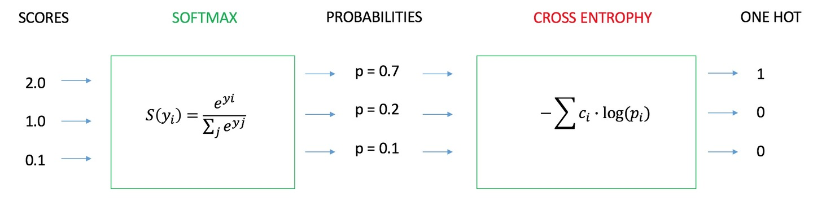
交叉熵的来源¶
信息量
一条信息的信息量大小和它的不确定性有很大的关系。一句话如果需要很多外部信息才能确定，我们就称这句话的信息量比较大。比如你听到“云南西双版纳下雪了”，那你需要去看天气预报、问当地人等等查证（因为云南西双版纳从没下过雪）。相反，如果和你说“人一天要吃三顿饭”，那这条信息的信息量就很小，因为条信息的确定性很高。
那我们就能将事件x0的信息量定义如下（其中p(x0)表示事件x0发生的概率）：
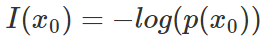
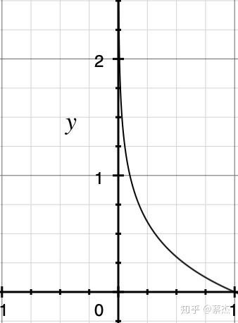
概率总是一个0-1之间的值，-log(x)的图像如上
熵
信息量是对于单个事件来说的，但是实际情况一件事有很多种发生的可能，比如掷骰子有可能出现6种情况，明天的天气可能晴、多云或者下雨等等。 熵是表示随机变量不确定的度量，是对所有可能发生的事件产生的信息量的期望 。公式如下：
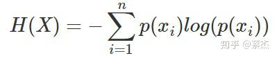
n表示事件可能发生的情况总数
其中一种比较特殊的情况就是掷硬币，只有正、反两种情况，该种情况（二项分布或者0-1分布）熵的计算可以简化如下：
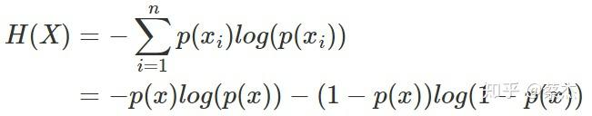
p(x)代表掷正面的概率，1-p(x)则表示掷反面的概率（反之亦然）
相对熵
相对熵又称KL散度，用于衡量对于同一个随机变量x的两个分布p(x)和q(x)之间的差异。在机器学习中，p(x)常用于描述样本的真实分布，例如[1,0,0,0]表示样本属于第一类，而q(x)则常常用于表示预测的分布，例如[0.7,0.1,0.1,0.1]。显然使用q(x)来描述样本不如p(x)准确，q(x)需要不断地学习来拟合准确的分布p(x)。
KL散度的公式如下：
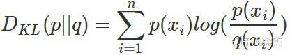
n表示事件可能发生的情况总数
KL散度的值越小表示两个分布越接近。
交叉熵
我们将KL散度的公式进行变形，得到：
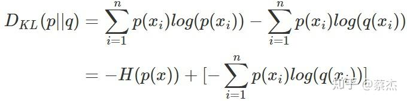
前半部分就是p(x)的熵，后半部分就是我们的交叉熵：
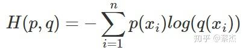
机器学习中，我们常常使用KL散度来评估predict和label之间的差别，但是由于KL散度的前半部分是一个常量，所以我们常常将后半部分的交叉熵作为损失函数，其实二者是一样的。
交叉熵作为loss函数的直觉¶
在回归问题中，我们常常使用均方误差（MSE）作为损失函数，其公式如下：
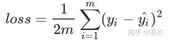
m表示样本个数，loss表示的是m个样本的均值
其实这里也比较好理解，因为回归问题要求拟合实际的值，通过MSE衡量预测值和实际值之间的误差，可以通过梯度下降的方法来优化。而不像分类问题，需要一系列的激活函数（sigmoid、softmax）来将预测值映射到0-1之间，这时候再使用MSE的时候就要好好掂量一下了，为啥这么说，请继续看：
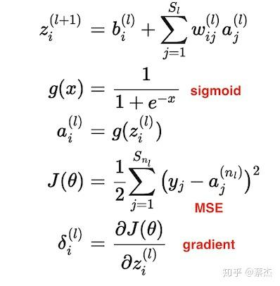
sigmoid加MES的基本公式
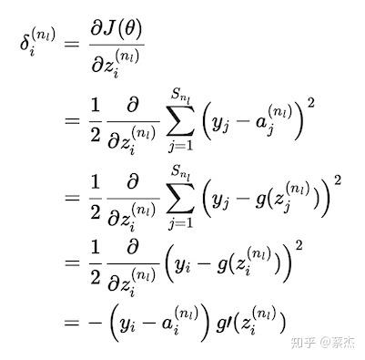
gradient推导过程
上面复杂的推导过程，其实结论就是下面一张图：
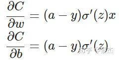
C就是 的J，sigma就是sigmoid函数，a就是predict
从以上公式可以看出，w和b的梯度跟激活函数的梯度成正比，激活函数的梯度越大，w和b的大小调整得越快，训练收敛得就越快。而我们都知道sigmoid函数长这样：
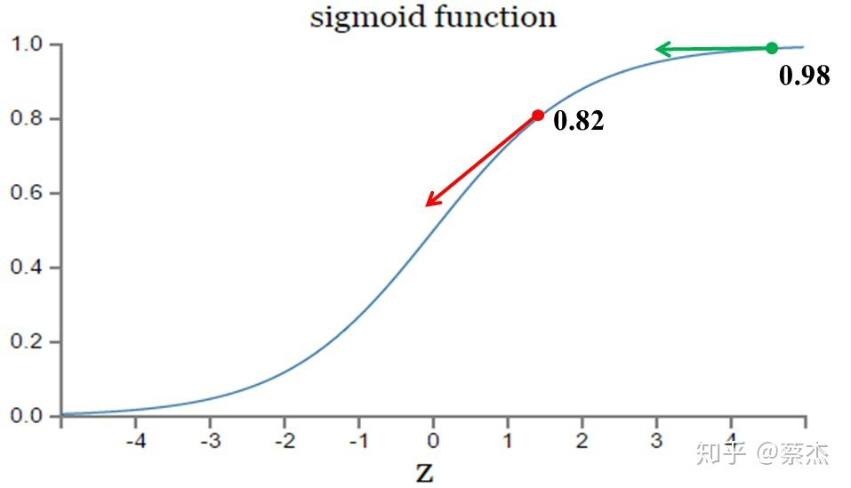
图片来自：https://blog.csdn.net/u014313009/article/details/51043064
在上图的绿色部分，初始值是0.98，红色部分初始值是0.82，假如真实值是0。直观来看那么0.82下降的速度明显高于0.98，但是明明0.98的误差更大，这就导致了神经网络不能像人一样，误差越大，学习的越快。
但是如果我们把MSE换成交叉熵会怎么样呢？
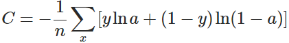
x表示样本，n表示样本的总数
重新计算梯度：
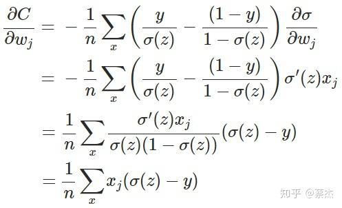
推导过程
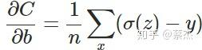
另外sigmoid有一个很好的性质：
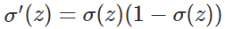
我们从结果可以看出梯度中不再含有sigmoid的导数，有的是sigmoid的值和实际值之间的差，也就满足了我们之前所说的错误越大，下降的越快。
这也就是在分类问题中常用cross entropy 而不是 MSE的原因了。
用例子来解释。
1. 预测政治倾向¶
我们希望根据一个人的年龄、性别、年收入等相互独立的特征，来预测一个人的政治倾向，有三种可预测结果：民主党、共和党、其他党。假设我们当前有两个逻辑回归模型（参数不同），这两个模型都是通过sigmoid的方式得到对于每个预测结果的概率值：
模型1 ：
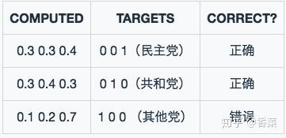模型1预测结果
模型1 对于样本1和样本2以非常微弱的优势判断正确，对于样本3的判断则彻底错误。
模型2 ：
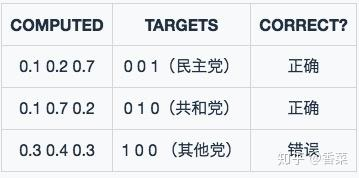模型2预测结果
模型2 对于样本1和样本2判断非常准确，对于样本3判断错误，但是相对来说没有错得太离谱。
好了，有了模型之后，我们需要通过定义损失函数来判断模型在样本上的表现了，那么我们可以定义哪些损失函数呢？
1.1 Classification Error（分类错误率）¶
最为直接的损失函数定义为：
模型1：
模型2：
我们知道， 模型1 和 模型2 虽然都是预测错了1个，但是相对来说 模型2 表现得更好，损失函数值照理来说应该更小，但是，很遗憾的是， 并不能判断出来，所以这种损失函数虽然好理解，但表现不太好。
1.2 Mean Squared Error (均方误差)¶
均方误差损失也是一种比较常见的损失函数，其定义为：
模型1：
对所有样本的loss求平均：
模型2：
对所有样本的loss求平均：
我们发现，MSE能够判断出来 模型2 优于 模型1 ，那为什么不采样这种损失函数呢？主要原因是逻辑回归配合MSE损失函数时，采用梯度下降法进行学习时，会出现模型一开始训练时，学习速率非常慢的情况（MSE损失函数）。
有了上面的直观分析，我们可以清楚的看到，对于分类问题的损失函数来说，分类错误率和均方误差损失都不是很好的损失函数，下面我们来看一下交叉熵损失函数的表现情况。
1.3 Cross Entropy Error Function（交叉熵损失函数）¶
1.3.1 表达式¶
(1) 二分类¶
在二分的情况下，模型最后需要预测的结果只有两种情况，对于每个类别我们的预测得到的概率为 和
。此时表达式为：
其中：
- —— 表示样本i的label，正类为1，负类为0
- —— 表示样本i预测为正的概率
(2) 多分类¶
多分类的情况实际上就是对二分类的扩展：
其中：
- ——类别的数量；
- ——指示变量（0或1）,如果该类别和样本i的类别相同就是1，否则是0；
- ——对于观测样本i属于类别
的预测概率。
现在我们利用这个表达式计算上面例子中的损失函数值：
模型1 ：
对所有样本的loss求平均：
模型2：
对所有样本的loss求平均：
可以发现，交叉熵损失函数可以捕捉到 模型1 和 模型2 预测效果的差异。
2. 函数性质¶

可以看出，该函数是凸函数，求导时能够得到全局最优值。
3. 学习过程¶
交叉熵损失函数经常用于分类问题中，特别是在神经网络做分类问题时，也经常使用交叉熵作为损失函数，此外，由于交叉熵涉及到计算每个类别的概率，所以交叉熵几乎每次都和 sigmoid(或softmax)函数 一起出现。
我们用神经网络最后一层输出的情况，来看一眼整个模型预测、获得损失和学习的流程：
- 神经网络最后一层得到每个类别的得分 scores ；
- 该得分经过 sigmoid(或softmax)函数 获得概率输出；
- 模型预测的类别概率输出与真实类别的one hot形式进行交叉熵损失函数的计算。
学习任务分为二分类和多分类情况，我们分别讨论这两种情况的学习过程。
3.1 二分类情况¶
 二分类交叉熵损失函数学习过程
二分类交叉熵损失函数学习过程
如上图所示，求导过程可分成三个子过程，即拆成三项偏导的乘积：
3.1.1 计算第一项：  ¶
¶
- 表示样本i预测为True的概率；
- 表示样本i为True时等于1，否则等于0；
3.1.2 计算第二项：  ¶
¶
这一项要计算的是sigmoid函数对于score的导数，我们先回顾一下sigmoid函数和分数求导的公式：
3.1.3 计算第三项：  ¶
¶
一般来说，scores是输入的线性函数作用的结果，所以有：
3.1.4 计算结果  ¶
¶
可以看到，我们得到了一个非常漂亮的结果，所以，使用交叉熵损失函数，不仅可以很好的衡量模型的效果，又可以很容易的的进行求导计算。
3.2 多分类情况¶
4. 优缺点¶
4.1 优点¶
在用梯度下降法做参数更新的时候，模型学习的速度取决于两个值：一、 学习率 ；二、 偏导值 。其中，学习率是我们需要设置的超参数，所以我们重点关注偏导值。从上面的式子中，我们发现，偏导值的大小取决于 和
，我们重点关注后者，后者的大小值反映了我们模型的错误程度，该值越大，说明模型效果越差，但是该值越大同时也会使得偏导值越大，从而模型学习速度更快。所以，使用逻辑函数得到概率，并结合交叉熵当损失函数时，在模型效果差的时候学习速度比较快，在模型效果好的时候学习速度变慢。
4.2 缺点¶
Deng [4]在2019年提出了ArcFace Loss，并在论文里说了Softmax Loss的两个缺点：1、随着分类数目的增大，分类层的线性变化矩阵参数也随着增大；2、对于封闭集分类问题，学习到的特征是可分离的，但对于开放集人脸识别问题，所学特征却没有足够的区分性。对于人脸识别问题，首先人脸数目(对应分类数目)是很多的，而且会不断有新的人脸进来，不是一个封闭集分类问题。
另外，sigmoid(softmax)+cross-entropy loss 擅长于学习类间的信息，因为它采用了类间竞争机制，它只关心对于正确标签预测概率的准确性，忽略了其他非正确标签的差异，导致学习到的特征比较散。基于这个问题的优化有很多，比如对softmax进行改进，如L-Softmax、SM-Softmax、AM-Softmax等。
5. 参考¶
[1]. 博客 - 神经网络的分类模型 LOSS 函数为什么要用 CROSS ENTROPY
[2]. 博客 - Softmax as a Neural Networks Activation Function
[3]. 博客 - A Gentle Introduction to Cross-Entropy Loss Function
[4]. Deng, Jiankang, et al. "Arcface: Additive angular margin loss for deep face recognition." Proceedings of the IEEE Conference on Computer Vision and Pattern Recognition. 2019.
凡本网注明"来源：XXX "的文/图/视频等稿件，本网转载出于传递更多信息之目的，并不意味着赞同其观点或证实其内容的真实性。如涉及作品内容、版权和其它问题，请与本网联系，我们将在第一时间删除内容！
作者: 飞鱼Talk, 蔡杰
来源： https://zhuanlan.zhihu.com/p/35709485 , https://zhuanlan.zhihu.com/p/61944055